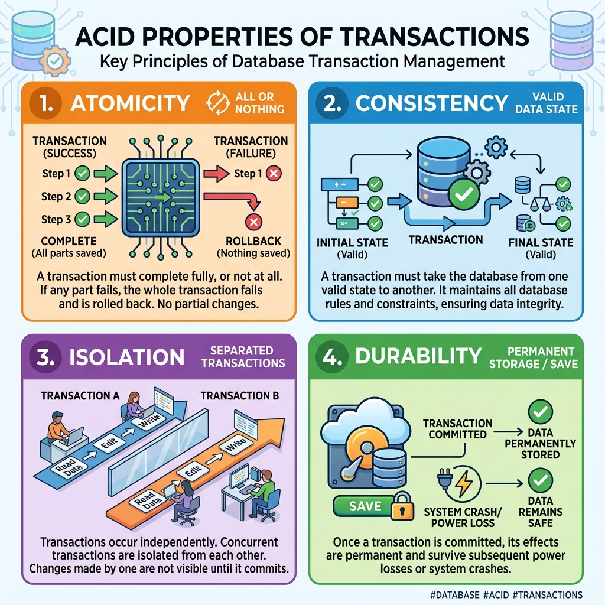
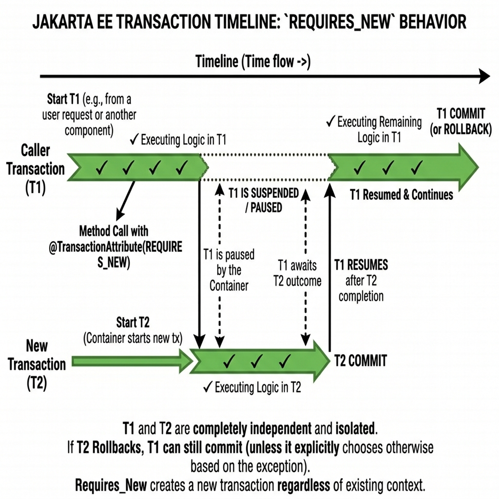

<title>Session 4 — Transactions, Locking, Events and Security, Explained Slowly</title>
<meta name="viewport" content="width=device-width, initial-scale=1">
<meta name="description" content="Session 4, written for people who have never seen ACID, locking or declarative security. Transactions, the six transaction attributes, optimistic and pessimistic locking, singleton locks, events and method-level security — all in plain English.">
<link rel="stylesheet" href="assets/css/styles.css">
<script>window.PAGE = "s04";</script>

<main class="page">

  <h1>Session 4 · Transactions, Locking, Events and Security, Explained Slowly</h1>
  <p class="lede">Session 1 and 2 taught you what a bean <em>is</em>. This page is about the four things
    that go wrong the moment real users arrive: money vanishing halfway through a transfer, two people
    overwriting each other's work, a slow job making everybody wait, and the wrong person running the
    wrong method. You do not need to know any of these words yet. Every difficult word is explained the
    moment it appears.</p>

  <div class="callout callout--key"><span class="callout__i">🎯</span>
    <div class="callout__b"><b>Four promises before we start</b>
      <ol style="margin:.6rem 0 0;padding-left:1.2rem">
        <li><strong>No jargon without a translation.</strong> Each new word gets a plain-English box.</li>
        <li><strong>Nothing is assumed.</strong> You do not need to have heard of ACID, locking, or
          declarative security before today.</li>
        <li><strong>You can try the important thing here.</strong> Press <em>Run</em> and watch a
          rollback happen on screen.</li>
        <li><strong>By the end you will know four annotations</strong> that each replace a page of
          hand-written safety code: <code>@TransactionAttribute</code>, <code>@Lock</code>,
          <code>@Observes</code> and <code>@RolesAllowed</code>.</li>
      </ol>
    </div>
  </div>

  <h2>What you will be able to do by the end</h2>
  <p>Not seven bullet points copied from a manual — six things, in plain words:</p>
  <div class="tablewrap"><table>
    <thead><tr><th>By the end you can…</th><th>Where it is taught</th></tr></thead>
    <tbody>
      <tr><td>Say what a transaction is, and why half a bank transfer is not allowed</td><td>Part 1</td></tr>
      <tr><td>Name the four ACID promises in your own words</td><td>Part 1</td></tr>
      <tr><td>Pick the right transaction attribute for a method, and say why <code>REQUIRED</code> is the default</td><td>Part 1 &amp; the Reference</td></tr>
      <tr><td>Stop two users from silently overwriting each other's data</td><td>Part 2</td></tr>
      <tr><td>Move slow work off the user's screen, using an event or a queue</td><td>Part 3</td></tr>
      <tr><td>Restrict a method to certain roles without writing a single <code>if</code></td><td>Part 4</td></tr>
    </tbody>
  </table></div>

  <div class="callout"><span class="callout__i">📖</span>
    <div class="callout__b"><b>How to read this page</b>
      The small labels on the left of each block tell you what kind of block it is.
      <ul style="margin:.6rem 0 0">
        <li><code>// concept</code> — an explanation to read.</li>
        <li><code>// checkpoint</code> — a quick self-test. Answers are hidden until you ask.</li>
        <li><code>// check yourself</code> — the quiz.</li>
        <li><code>// recap</code> — the one-line summary of everything.</li>
      </ul>
      Read it top to bottom the first time. It is written in the order that makes it easiest, not the
      order a textbook would use.
    </div>
  </div>

  <hr>

  <!-- =====================================================================
       PART 1 — TRANSACTIONS AND ACID
       ===================================================================== -->

  <span class="eyebrow">concept</span>
  <h2>Part 1 · All of it, or none of it: transactions</h2>

  <h3>1.1 The transfer that half happened</h3>
  <p>Your program moves $1,000 from Alice to Bob. That looks like one action. It is not — underneath, it
    is <strong>two</strong> database steps:</p>
  <ol>
    <li>Take $1,000 <em>out of</em> Alice's account. (This is called a <strong>debit</strong>.)</li>
    <li>Put $1,000 <em>into</em> Bob's account. (This is called a <strong>credit</strong>.)</li>
  </ol>
  <p>Now imagine the power fails after step 1 and before step 2. Alice is $1,000 poorer. Bob has
    nothing. The money has simply <strong>vanished</strong> — and no amount of careful Java prevents a
    power cut.</p>
  <p>Every serious business system has this same shape of problem:</p>
  <ul>
    <li>An order is placed, but the stock is never reduced.</li>
    <li>A seat is booked, but the payment never completes.</li>
    <li>A student enrols, but the class list is never updated.</li>
  </ul>

  <h3>1.2 The fix: a transaction</h3>
  <p>A <strong>transaction</strong> is a group of database steps that the system treats as
    <strong>one single step</strong>. Either the whole group happens, or none of it happens.</p>
  <p>Two new words come with it, and both describe how the group <em>ends</em>:</p>

  <div class="tablewrap"><table>
    <thead><tr><th>Word</th><th>What it means</th></tr></thead>
    <tbody>
      <tr><td><strong>Commit</strong></td><td>“Everything worked — make all of these changes permanent.”</td></tr>
      <tr><td><strong>Rollback</strong></td><td>“Something failed — <em>undo</em> everything this group did, as if it had never started.”</td></tr>
    </tbody>
  </table></div>

  <p>So the transfer becomes one transaction: the debit <em>and</em> the credit together. If step 2
    fails, the system rolls back step 1, and Alice's money is back where it started. That is the whole
    idea.</p>

  <div class="plainwords"><b>In plain words</b>
    <p>A transaction is a promise that says: <em>all of these changes, or none of them.</em></p>
    <p>A <strong>commit</strong> is the moment the changes become real. A <strong>rollback</strong> is
      the moment they are quietly undone. There is no in-between state where the customer has been
      charged but nothing was delivered.</p>
  </div>

  <div class="callout callout--analogy"><span class="callout__i">🏠</span>
    <div class="callout__b"><b>Analogy</b>
      Buying a house. You do not hand over the keys on Monday and simply <em>hope</em> the money turns
      up on Tuesday. Buyer and seller meet at the notary's table: the money moves and the keys change
      hands in the same moment. If either half falls through, the whole deal is called off and the keys
      go back in the seller's pocket.</div>
  </div>

  <h3>1.3 The four promises: ACID</h3>
  <p>Transactions are not new — databases have offered them for decades. The guarantees they make are
    summed up by four letters, <strong>ACID</strong>. One letter, one promise.</p>

  <figure>
    
    <figcaption><b>The four ACID pillars:</b> the bedrock of any mission-critical enterprise data system.</figcaption>
  </figure>

  <p>Here they all are, with the banking example that matters:</p>

  <div class="tablewrap"><table>
    <thead><tr><th>Promise</th><th>What it guarantees</th><th>Banking example</th></tr></thead>
    <tbody>
      <tr>
        <td><strong>A — Atomicity</strong></td>
        <td>“All or nothing.”</td>
        <td>The debit and the credit both commit, or both roll back. There is no such thing as half a transfer.</td>
      </tr>
      <tr>
        <td><strong>C — Consistency</strong></td>
        <td>“Every rule still holds before and after.”</td>
        <td>An account may not fall below its overdraft limit of −$500. If a transaction would break that rule, it aborts.</td>
      </tr>
      <tr>
        <td><strong>I — Isolation</strong></td>
        <td>“Running transactions cannot see each other.”</td>
        <td>While Alice's transfer is still in progress, Bob cannot see the half-deposited balance. He sees the balance as it was before, until the commit.</td>
      </tr>
      <tr>
        <td><strong>D — Durability</strong></td>
        <td>“A committed change survives a crash.”</td>
        <td>Once committed and acknowledged, pulling the server's power plug will never erase the transaction record.</td>
      </tr>
    </tbody>
  </table></div>

  <div class="plainwords"><b>In plain words</b>
    <p><strong>Atomicity</strong> is the all-or-nothing promise. <strong>Consistency</strong> says every
      rule still holds when the dust settles. <strong>Isolation</strong> says two transactions running
      at once cannot peek at each other's unfinished work. <strong>Durability</strong> says once it is
      committed, it is permanent — even if the power dies one second later.</p>
  </div>

  <div class="callout callout--tip"><span class="callout__i">💡</span>
    <div class="callout__b"><b>The one thing to notice</b>
      These four promises are not features you <em>write</em>. They are guarantees the database and the
      transaction manager give you — but only if you group your steps into one transaction. Forget
      that, and you can have a fast, tidy-looking program that still loses money.</div>
  </div>

  <h3>1.4 Who draws the line? CMT versus BMT</h3>
  <p>A transaction has a <strong>boundary</strong>: a clear start and a clear end. Deciding where that
    boundary sits is called <strong>demarcation</strong> — a long word for “where does the transaction
    begin, and where does it finish?”</p>
  <p>There are two ways to decide, and in real life you will only ever use one.</p>

  <div class="tablewrap"><table>
    <thead><tr><th></th><th>Container-Managed Transactions (CMT)</th><th>Bean-Managed Transactions (BMT)</th></tr></thead>
    <tbody>
      <tr>
        <td><strong>Who controls it</strong></td>
        <td><strong>Declarative.</strong> You put a label on the method; the container opens, commits and rolls back for you.</td>
        <td><strong>Programmatic.</strong> You call <code>userTx.begin()</code> and <code>userTx.commit()</code> yourself.</td>
      </tr>
      <tr>
        <td><strong>How hard is it</strong></td>
        <td>Very simple. No boilerplate code at all.</td>
        <td>Hard and easy to get wrong. Miss one rollback inside an exception handler and you quietly corrupt someone's data.</td>
      </tr>
      <tr>
        <td><strong>Which is the default</strong></td>
        <td><strong>Yes.</strong> More than 95% of enterprise beans use CMT.</td>
        <td>No. Only used when you need a finer-grained checkpoint in the middle of a method.</td>
      </tr>
    </tbody>
  </table></div>

  <div class="callout callout--analogy"><span class="callout__i">🧾</span>
    <div class="callout__b"><b>Analogy</b>
      With CMT you hire an accountant: you mark the folder, and a professional keeps the books correct.
      With BMT you keep the books yourself. One of those scales to a whole company; the other works
      beautifully right up until the day you miss a line.</div>
  </div>

  <div class="plainwords"><b>In plain words</b>
    <p><strong>CMT</strong> means “I write a label on the method and the container draws the boundary.”
      That is the entire job. <strong>BMT</strong> means “I write the start and the end myself, by
      hand.”</p>
    <p>Start with CMT. In this course you will almost never need BMT.</p>
  </div>

  <h3>1.5 Watch a rollback happen</h3>
  <p>Here is a representative container log. A client asks to transfer $2,500 from account 101. The debit goes
    through — and then the second step is refused, because account 102 is frozen. Press
    <strong>Run</strong> and watch what the container does next.</p>

  <div class="bench" data-run="canned">
    <div class="bench__head">
      <span class="dot"></span>
      <span class="kind">interactive simulation</span>
      <span class="mode">Transaction Demarcation &amp; Rollback Replay</span>
    </div>
    <pre class="bench__code"><code>// Client calls transfer(from: 101, to: 102, amount: $2,500)
// Container opens CMT Transaction T1 [REQUIRED]
Account 101 debited: -$2,500.00 (Balance remaining: $450.00)
Account 102 credited: Target account #102 is frozen by compliance!
// Container catches ComplianceLockException (a RuntimeException) -> automatic ROLLBACK</code></pre>
    <div class="bench__controls">
      <button class="btn-run" type="button">Run</button>
      <span class="bench__hint">Observe how the EJB container intercepts exceptions and reverses database changes.</span>
    </div>
    <script type="text/plain" class="bench__canned">
[07:22:10,001 INFO] [EJB CMT] Initiating Transaction [TxId: 0x9f44a] for TransferBean.transfer()
[07:22:10,005 INFO] [JTA Resource] Enlisting DataSource (PostgreSQL) in TxId 0x9f44a
[07:22:10,009 INFO] [SQL UPDATE] accounts SET balance = balance - 2500 WHERE id = 101 -> 1 row affected
[07:22:10,014 WARN] [Business Check] Target account 102 is marked FROZEN: ComplianceLockException thrown!
[07:22:10,016 INFO] [EJB CMT] Runtime exception intercepted. Marking TxId 0x9f44a as SetRollbackOnly
[07:22:10,020 INFO] [JTA TransactionManager] Executing ROLLBACK for TxId 0x9f44a
[07:22:10,024 INFO] [SQL ROLLBACK] Undoing debit on account 101 -> Balance restored to $2,950.00
[07:22:10,027 ERROR] [Client Response] 500 Transaction aborted: Account 102 is frozen. No funds moved.
    </script>
    <pre class="bench__out" aria-live="polite"></pre>
  </div>

  <div class="callout callout--tip"><span class="callout__i">🔬</span>
    <div class="callout__b"><b>The one thing to notice</b>
      Nobody wrote the word <code>rollback</code> anywhere in the business code. The container watched
      for the failure, marked the transaction as doomed, and <em>undid the debit on its own</em>. That
      is CMT: your safety net is a label, not a line of code.</div>
  </div>

  <h3>1.6 The six transaction attributes: joining a phone call</h3>
  <p>You have chosen CMT, so the container draws the transaction boundary. But <em>which</em>
    boundary? Every method can be called in one of two situations:</p>
  <ul>
    <li>the caller is <strong>already inside</strong> a transaction, or</li>
    <li>the caller is <strong>not in any transaction</strong> at all.</li>
  </ul>
  <p>The <strong>transaction attribute</strong> is the label you put on a method to say how it behaves
    in each of those two cases. There are six of them, and they look scarier than they are — because
    each one is just an answer to a single question.</p>

  <h4>Think of it as a phone call</h4>
  <p>You are the specialist at a desk. Someone calls you. Before you start talking, you must decide
    what to do about <em>the call that may already be in progress</em>. Each attribute is one possible
    answer:</p>

  <div class="tablewrap"><table>
    <thead><tr><th>Attribute</th><th>In one sentence</th></tr></thead>
    <tbody>
      <tr>
        <td><code>REQUIRED</code> <em>(default)</em></td>
        <td>“Is a call already happening? Then I join it. If not, I start a new one.” This is the default, and it is what you want almost every time.</td>
      </tr>
      <tr>
        <td><code>REQUIRES_NEW</code></td>
        <td>“I do not care what else is happening. I open a fresh, separate call of my own — and my call still counts even if the other one collapses.”</td>
      </tr>
      <tr>
        <td><code>SUPPORTS</code></td>
        <td>“If a call is happening, I join it. If not, I just chat — no call needed.”</td>
      </tr>
      <tr>
        <td><code>NOT_SUPPORTED</code></td>
        <td>“Put the current call on hold. I will do my work with no call at all.”</td>
      </tr>
      <tr>
        <td><code>MANDATORY</code></td>
        <td>“I will only work if a call is already in progress. If nobody started one, I refuse — that is an error.”</td>
      </tr>
      <tr>
        <td><code>NEVER</code></td>
        <td>“I will <em>not</em> work while a call is in progress. If one is happening, I refuse.”</td>
      </tr>
    </tbody>
  </table></div>

  <div class="plainwords"><b>In plain words</b>
    <p><code>REQUIRED</code> and <code>REQUIRES_NEW</code> are the two you will actually use.
      <code>REQUIRED</code> says <em>“join whatever is going on, or start something if nothing is.”</em>
      <code>REQUIRES_NEW</code> says <em>“my work is so important that it must be recorded separately,
      even if everything around me fails.”</em></p>
    <p><code>SUPPORTS</code> and <code>NOT_SUPPORTED</code> are for read-only work that does not care.
      <code>MANDATORY</code> and <code>NEVER</code> exist to catch mistakes: they refuse to run in the
      wrong situation rather than doing something surprising.</p>
  </div>

  <h4>Why <code>REQUIRES_NEW</code> matters: the audit log</h4>
  <p>An audit log records who did what. Suppose the transfer fails and rolls back — do you want the
    <em>attempt</em> to vanish from the log too? No. The log is supposed to say “Alice tried to move
    $1,000 and it failed.”</p>
  <p>So the logging method is marked <code>REQUIRES_NEW</code>. Its work runs in its own separate
    transaction and commits on its own, whatever happens to the transfer around it.</p>

  <div class="code-head">AuditLogBean.java — the audit method marked REQUIRES_NEW</div>
  <pre><code>package com.globalbank.ejb;

import jakarta.ejb.Stateless;
import jakarta.ejb.TransactionAttribute;
import jakarta.ejb.TransactionAttributeType;

@Stateless
public class AuditLogBean {

    @TransactionAttribute(TransactionAttributeType.REQUIRES_NEW)
    public void recordAttempt(String user, double amount) {
        // Runs in its own fresh transaction: this line is committed
        // even if the transfer around it rolls back.
        auditStore.append(user + " attempted to move $" + amount);
    }
}</code></pre>

  <p>That annotation is the whole change: the container suspends the caller's transaction and lets
    this method commit on its own.</p>

  <figure>
    
    <figcaption><b>The REQUIRES_NEW timeline:</b> the caller's transaction T1 is paused, the audit
      transaction T2 runs and commits on its own, then T1 resumes. That is why the audit line survives
      even when T1 later rolls back.</figcaption>
  </figure>

  <div class="callout callout--mistake"><span class="callout__i">⚠️</span>
    <div class="callout__b"><b>The trap in these two words</b>
      <code>MANDATORY</code> and <code>NEVER</code> are <em>not</em> a security setting, and they do not
      mean “strict” and “never used”. <code>MANDATORY</code> means “I must be called from inside a
      transaction, or I refuse to run.” <code>NEVER</code> means “I must never run inside a
      transaction.” Choosing them because of how the word sounds is a classic beginner mistake.</div>
  </div>

  <div class="callout callout--tip"><span class="callout__i">💡</span>
    <div class="callout__b"><b>If you remember only one thing from Part 1</b>
      <code>REQUIRED</code> is the default for a reason. Use it everywhere, and reach for
      <code>REQUIRES_NEW</code> only when a piece of work genuinely must survive a caller's failure —
      audit logs, notifications, counters.</div>
  </div>

  <div class="checkpoint"><b>Checkpoint 1 · before you move on</b>
    <p>Answer out loud, in your own words. Then open the answers.</p>
    <ol>
      <li>In the transfer example, what exactly goes wrong if step 2 fails and there is no transaction?</li>
      <li>What does <em>Isolation</em> promise?</li>
      <li>A method marked <code>REQUIRES_NEW</code> is called from inside another transaction. What
        happens to the caller's transaction?</li>
    </ol>
    <details>
      <summary><strong>Show answers</strong></summary>
      <ol>
        <li>The debit already happened, so Alice loses $1,000 and Bob receives nothing — the money
          vanishes. A transaction rolls the debit back instead.</li>
        <li>Two transactions running at the same time <strong>cannot see each other's unfinished
          work</strong>. Bob sees the old balance until Alice's transfer commits.</li>
        <li>It is <strong>suspended</strong> — paused — while the new transaction runs. The new
          transaction then commits or rolls back on its own, independently of the caller.</li>
      </ol>
    </details>
  </div>

  <hr>

  <!-- =====================================================================
       PART 2 — CONCURRENCY AND LOCKING
       ===================================================================== -->

  <span class="eyebrow">concept</span>
  <h2>Part 2 · Two users, one row: stopping lost updates</h2>

  <h3>2.1 The lost update</h3>
  <p>Transactions keep you safe when something <em>fails</em>. This part is about a different danger:
    when two things <em>succeed</em>, but at the same moment.</p>
  <p>An account holds $1,000. Two tellers work at the same instant:</p>
  <ul>
    <li><strong>Teller 1</strong> reads the balance: $1,000. Plans to withdraw $800 → new balance $200.</li>
    <li><strong>Teller 2</strong> reads the balance: $1,000. Plans to withdraw $600 → new balance $400.</li>
  </ul>
  <p>Both tellers read the same starting number. Teller 1 saves $200. Teller 2 saves $400, overwriting
    Teller 1's change. The bank has paid out $1,400 from a $1,000 account, and the final balance is
    wrong. One of the two updates was <strong>silently lost</strong>. This is called a
    <strong>lost update</strong>.</p>

  <div class="callout callout--analogy"><span class="callout__i">📋</span>
    <div class="callout__b"><b>Analogy</b>
      A shared shopping whiteboard. Two people look at it at the same moment: “milk, eggs.” Both walk
      away, both decide to add one item, and both write out the <em>whole</em> list again. Whoever
      writes last wins — and the other person's item has vanished from the board.</div>
  </div>

  <h3>2.2 Two ways to stop it</h3>
  <p>There are exactly two strategies, and their names describe the personality of the person using
    them. <strong>Optimistic</strong> means “I will assume nothing goes wrong.”
    <strong>Pessimistic</strong> means “I will assume it does.”</p>

  <p><strong>Optimistic locking</strong> takes no lock at all when you read. Instead the row carries a
    little counter — a version number. Every time the row is saved, the counter goes up by one. When
    <em>your</em> save arrives, the system checks the counter: is it still the version I read? If
    somebody else bumped it first, your save is refused, and you re-read the row and try again.</p>

  <p><strong>Pessimistic locking</strong> does the opposite. The row is locked the moment you read it.
    Everybody else who wants that row waits in a queue until you release the lock.</p>

  <div class="tablewrap"><table>
    <thead><tr><th>Strategy</th><th>How it works</th><th>How you write it</th><th>Best for</th></tr></thead>
    <tbody>
      <tr>
        <td><strong>Optimistic</strong></td>
        <td>No lock on read. A version counter is checked at commit time, and the save fails if another thread bumped the version first.</td>
        <td><code>@Version private int version;</code> on the JPA entity</td>
        <td>Read-heavy systems — high scalability, conflicts are rare.</td>
      </tr>
      <tr>
        <td><strong>Pessimistic</strong></td>
        <td>The database row is locked immediately on read. Later threads queue up until the lock is freed.</td>
        <td><code>em.find(..., LockModeType.PESSIMISTIC_WRITE)</code></td>
        <td>High-conflict financial writes, where collisions are expected.</td>
      </tr>
    </tbody>
  </table></div>

  <p>Two of those words need a translation. A <strong>JPA entity</strong> is a Java class mapped to a
    database table, and <code>em</code> is the <code>EntityManager</code> — the object that talks to the
    database for you. The <a href="13-jpa-persistence.html">JPA bonus page</a> tells that story
    properly; for now, read both as “the database side of things”.</p>

  <div class="callout callout--analogy"><span class="callout__i">🔑</span>
    <div class="callout__b"><b>Analogy — the petrol-station key</b>
      To use the petrol station's toilet you must take the single key on its big wooden stick. While you
      have it, everyone else waits. That is <strong>pessimistic</strong> locking: take the key, hold up
      everyone else, hand it back when you are done.</div>
  </div>

  <div class="callout callout--analogy"><span class="callout__i">🕐</span>
    <div class="callout__b"><b>Analogy — the date stamp on a form</b>
      You print a form, fill it in at your desk, and bring it back. Nobody blocked you while you worked.
      But before filing it, the clerk checks the date: “somebody filed a newer version while you were
      away — your copy is stale, do it again.” That is <strong>optimistic</strong> locking: no waiting
      at all, but the clash is caught at the very end.</div>
  </div>

  <div class="plainwords"><b>In plain words</b>
    <p>Optimistic locking says: <em>let everybody work, and refuse the save if the data changed
      underneath them.</em> It is fast, and it works because clashes are rare.</p>
    <p>Pessimistic locking says: <em>only one person may even look at this row.</em> It is safe under
      heavy conflict, but everybody else stands in a queue.</p>
  </div>

  <h3>2.3 When one object is shared by everyone</h3>
  <p>Recall Session 1: a <code>@Singleton</code> bean is <strong>one single instance</strong>, shared by
    the whole application. That is the lost-update situation again — but happening in memory instead of
    in a database row.</p>
  <p>By default the container handles it for you. This is called <strong>Container-Managed
    Concurrency (CMC)</strong>: you say who may come in, using <code>@Lock</code>, and the container
    makes it true.</p>

  <div class="tablewrap"><table>
    <thead><tr><th>Lock</th><th>What it allows</th><th>Use it for</th></tr></thead>
    <tbody>
      <tr><td><code>@Lock(LockType.READ)</code></td><td>Many threads at the same time.</td><td>Methods that only <em>read</em> — nothing can be corrupted.</td></tr>
      <tr><td><code>@Lock(LockType.WRITE)</code></td><td>Exactly one thread. Everyone else queues.</td><td>Methods that <em>change</em> the shared data.</td></tr>
    </tbody>
  </table></div>

  <p>There is a second, quieter question: if a thread has to <em>wait</em> for the lock, how long should
    it wait? That is what <code>@AccessTimeout</code> answers — give up after this long, rather than
    hanging forever.</p>

  <div class="code-head">ApplicationCacheBean.java — controlled concurrency</div>
  <pre><code>package com.globalbank.ejb;

import jakarta.ejb.Singleton;
import jakarta.ejb.ConcurrencyManagement;
import jakarta.ejb.ConcurrencyManagementType;
import jakarta.ejb.Lock;
import jakarta.ejb.LockType;
import jakarta.ejb.AccessTimeout;
import java.util.concurrent.TimeUnit;

@Singleton
@ConcurrencyManagement(ConcurrencyManagementType.CONTAINER)
public class ApplicationCacheBean {

    private String exchangeRates;

    // Multiple threads can read concurrently without blocking each other
    @Lock(LockType.READ)
    public String getRates() {
        return this.exchangeRates;
    }

    // Only ONE thread can write at a time. Other callers will wait up to 3 seconds
    @Lock(LockType.WRITE)
    @AccessTimeout(value = 3, unit = TimeUnit.SECONDS)
    public void updateRates(String newRates) {
        this.exchangeRates = newRates;
    }
}</code></pre>

  <div class="callout callout--tip"><span class="callout__i">🔬</span>
    <div class="callout__b"><b>The one thing to notice</b>
      <code>@ConcurrencyManagement(ConcurrencyManagementType.CONTAINER)</code> means “container, you
      decide who enters — I will just label each method.” After that, the entire safety of the shared
      <code>exchangeRates</code> field comes down to one word per method: <code>READ</code> for
      looking, <code>WRITE</code> for changing.</div>
  </div>

  <div class="checkpoint"><b>Checkpoint 2 · before you move on</b>
    <ol>
      <li>In your own words, what is a lost update?</li>
      <li>Which locking strategy makes other users wait immediately, and how does it do it?</li>
      <li>A singleton method changes a shared counter. Which lock does it need, and why?</li>
    </ol>
    <details>
      <summary><strong>Show answers</strong></summary>
      <ol>
        <li>Two users read the same value at the same moment, both save their own version, and the later
          save wipes out the earlier one — so one update is silently lost.</li>
        <li><strong>Pessimistic</strong> locking. It locks the row the moment you read it, so everyone
          else queues until you release the lock.</li>
        <li><code>@Lock(LockType.WRITE)</code>. It changes shared data, so only one thread may be inside
          at a time. A <code>READ</code> lock would let two threads change it at once and lose an
          update.</li>
      </ol>
    </details>
  </div>

  <hr>

  <!-- =====================================================================
       PART 3 — EVENT-DRIVEN
       ===================================================================== -->

  <span class="eyebrow">concept</span>
  <h2>Part 3 · Don't make the user wait: events and background work</h2>

  <h3>3.1 Ten thousand clicks at once</h3>
  <p>Ten thousand customers press “Pay now” in the same second.</p>
  <p>If every request does the whole job before replying — charge the card, update the database, send
    the receipt email, write the audit line — then every one of those ten thousand browsers sits
    waiting. The page looks frozen. The server buckles.</p>
  <p>The fix is to stop thinking in terms of <em>calls</em> and start thinking in terms of
    <strong>events</strong>: “this happened — somebody deal with it.” The user's page can reply
    immediately while the real work goes on elsewhere.</p>

  <h3>3.2 Two ways to hand off work</h3>
  <p>Jakarta EE gives you two quite different tools for this. Choosing between them is really a question
    of <em>how far away</em> the listener is.</p>

  <div class="tablewrap"><table>
    <thead><tr><th>Mechanism</th><th>Reach</th><th>How it decouples</th></tr></thead>
    <tbody>
      <tr>
        <td><strong>Message-driven bean (MDB)</strong></td>
        <td>Distributed — across servers, via Jakarta Messaging (JMS — the standard way Java programs
          send messages to each other).</td>
        <td>A publisher drops a message on a Queue or a Topic; an MDB picks it up in the background, possibly on a completely different machine.</td>
      </tr>
      <tr>
        <td><strong>CDI events (<code>@Observes</code>)</strong></td>
        <td>In-process — inside one running application.</td>
        <td>A producer calls <code>event.fire(...)</code>; the observer methods react immediately. No queue, no separate service.</td>
      </tr>
    </tbody>
  </table></div>

  <div class="plainwords"><b>In plain words</b>
    <p>Both of them let one part of your program say <em>“something happened”</em> without knowing — or
      caring — who is listening.</p>
    <p>The MDB version ships the message across the network and answers the user instantly. The CDI
      version shouts inside the same building, and the listeners react at once.</p>
  </div>

  <h3>3.3 The queue: a message-driven bean</h3>
  <p>A <strong>message-driven bean</strong> sits in the background and listens. When a message arrives,
    the container wakes the bean, it does its work, and it goes back to listening. The sender never
    waits for an answer — that is what <strong>asynchronous</strong> means.</p>

  <div class="callout callout--analogy"><span class="callout__i">🎫</span>
    <div class="callout__b"><b>Analogy</b>
      A busy takeaway counter. You pay, get a numbered ticket, and sit down — you are not standing at
      the counter watching your food being cooked. The kitchen works through the tickets in order. Your
      ticket is a message on a queue; the kitchen is the MDB.</div>
  </div>

  <p>You met MDBs properly in Session 1 &amp; 2, and they get a whole session of their own later. For
    this page the point is simply this: a <strong>queue</strong> is the tool you reach for when the
    listener is <em>somewhere else</em>, or when the work must survive even if this server restarts.</p>

  <p>A <strong>topic</strong> is the close cousin of a queue, and the difference is worth one sentence:
    a queue delivers each message to <em>one</em> consumer, while a topic delivers a copy to
    <em>every</em> subscriber. Reach for a topic when several systems all need to hear the same
    announcement.</p>

  <h3>3.4 The announcement: CDI events</h3>
  <p>Sometimes the listener is not far away at all — it is another class in <em>the same
    application</em>. For that, CDI gives you <strong>events</strong>. There are three small pieces:</p>
  <ol>
    <li>an <strong>event object</strong> — a plain class carrying the details of what happened;</li>
    <li>a <strong>producer</strong> — the code that fires the event, without knowing who listens;</li>
    <li>an <strong>observer</strong> — a method marked <code>@Observes</code>, which runs when the event
      is fired.</li>
  </ol>

  <div class="callout callout--analogy"><span class="callout__i">📢</span>
    <div class="callout__b"><b>Analogy</b>
      A fire alarm in an office. The person who pressed it has no idea who will respond. The floor
      warden heads for the stairs, the kitchen switches off the ovens, security opens the doors. One
      announcement, several independent reactions — and none of them needed anybody's phone number.</div>
  </div>

  <div class="code-head">PaymentCompletedEvent.java — the event payload</div>
  <pre><code>package com.globalbank.events;

// A plain bag of details — nothing more.
public class PaymentCompletedEvent {
    public final int accountId;
    public final double amount;
    public PaymentCompletedEvent(int id, double amt) { this.accountId = id; this.amount = amt; }
}</code></pre>

  <div class="code-head">PaymentBean.java — the producer</div>
  <pre><code>package com.globalbank.events;

import jakarta.ejb.Stateless;
import jakarta.enterprise.event.Event;
import jakarta.inject.Inject;

@Stateless
public class PaymentBean {

    @Inject
    private Event&lt;PaymentCompletedEvent&gt; paymentEvents;

    public void processPayment(int id, double amt) {
        // complete the payment ...
        paymentEvents.fire(new PaymentCompletedEvent(id, amt));
    }
}</code></pre>

  <div class="code-head">AuditAndSMSNotificationBean.java — the observer</div>
  <pre><code>package com.globalbank.events;

import jakarta.ejb.Stateless;
import jakarta.enterprise.event.Observes;

@Stateless
public class AuditAndSMSNotificationBean {
    public void onPaymentDone(@Observes PaymentCompletedEvent event) {
        System.out.println("Triggered SMS receipt for Account: " + event.accountId);
    }
}</code></pre>

  <div class="callout callout--tip"><span class="callout__i">🔬</span>
    <div class="callout__b"><b>The one thing to notice</b>
      <code>PaymentBean</code> never mentions <code>AuditAndSMSNotificationBean</code>. No field, no
      import, no reference of any kind. It fires an event and walks away. You could add a third listener
      tomorrow — fraud detection, a loyalty-points counter — and never touch
      <code>PaymentBean</code> at all.</div>
  </div>

  <div class="callout callout--warn"><span class="callout__i">⚠️</span>
    <div class="callout__b"><b>Careful: events fired inside a transaction</b>
      A CDI observer runs <em>during</em> the producer's call by default, so it can still be part of the
      same transaction — which is usually what you want, but not always. If you want the reaction to
      happen only <em>after</em> the transaction commits, say so explicitly with
      <code>@Observes(during = TransactionPhase.AFTER_SUCCESS)</code>. Do not assume it is automatic.</div>
  </div>

  <div class="checkpoint"><b>Checkpoint 3 · before the quiz</b>
    <p>Answer these three, then check yourself.</p>
    <ol>
      <li>Why does routing work through an MDB let the user's page respond instantly?</li>
      <li>In the CDI example, which class actually decides that an SMS should be sent?</li>
      <li>Which tool would you use if the listener had to run on a different machine?</li>
    </ol>
    <details>
      <summary><strong>Show answers</strong></summary>
      <ol>
        <li>Because the sender does not wait for the work to finish. The message goes onto a queue and
          the page returns immediately; the MDB processes it in the background.</li>
        <li>Neither the producer nor the event decides. <code>AuditAndSMSNotificationBean</code> decides,
          in its <code>@Observes</code> method — and <code>PaymentBean</code> does not even know it
          exists.</li>
        <li>A <strong>message-driven bean</strong>, using JMS. CDI events only work inside one running
          application.</li>
      </ol>
    </details>
  </div>

  <hr>

  <!-- =====================================================================
       PART 4 — SECURITY
       ===================================================================== -->

  <span class="eyebrow">concept</span>
  <h2>Part 4 · Who is allowed in: security with a label</h2>

  <h3>4.1 The problem</h3>
  <p>Bank branch opening hours should be readable by anyone. A balance lookup should be available to a
    teller or a manager. Authorising a credit line should be for managers only. And an old internal
    debug method should be usable by <em>nobody</em>.</p>
  <p>You could write an <code>if</code> statement at the top of every single method. Most beginners do.
    It works, right up to the day somebody adds a new method and forgets the <code>if</code>.</p>
  <p>Jakarta EE lets you do it instead with <strong>one label above the method</strong>.</p>

  <h3>4.2 Security happens in three places, not one</h3>
  <p>Before the labels, look at the whole picture. Good security is not one wall — it is several layers,
    so that a hole in one does not become a hole in the system.</p>

  <figure>
    
    <figcaption><b>Three security layers:</b> defence in depth, from application permissions out to
      transport encryption.</figcaption>
  </figure>

  <div class="tablewrap"><table>
    <thead><tr><th>Layer</th><th>What it protects</th><th>Everyday comparison</th></tr></thead>
    <tbody>
      <tr>
        <td><strong>Application layer</strong></td>
        <td><em>Who may do what.</em> Roles and permissions on your own methods — declared or written by hand.</td>
        <td>The guest list at the door.</td>
      </tr>
      <tr>
        <td><strong>Transport layer (TLS)</strong></td>
        <td><em>Who can read what you send.</em> HTTPS encrypts the traffic between the browser and the server.</td>
        <td>The letter sealed in a tamper-proof envelope.</td>
      </tr>
      <tr>
        <td><strong>Message layer (WS-Security)</strong></td>
        <td><em>Trust between systems.</em> Signing and encrypting the message itself, so it stays protected after it is unpacked.</td>
        <td>The signature inside the letter, which still proves who wrote it after the envelope is opened.</td>
      </tr>
    </tbody>
  </table></div>

  <p>This session covers the <strong>application layer</strong> — the part you write yourself. Transport
    is a server setting, and message-layer security belongs to web services.</p>

  <h3>4.3 Declarative security: a label above the method</h3>
  <p>“Declarative” means <em>you declare the rule instead of coding it</em>. There are three annotations
    to know, and they read almost like English.</p>

  <div class="tablewrap"><table>
    <thead><tr><th>Annotation</th><th>Who may call this method</th></tr></thead>
    <tbody>
      <tr><td><code>@PermitAll</code></td><td>Anyone at all — even a user who never logged in.</td></tr>
      <tr><td><code>@RolesAllowed({"TELLER", "MANAGER"})</code></td><td>Only users in the listed roles. You can give one role or several.</td></tr>
      <tr><td><code>@DenyAll</code></td><td>Nobody. The method cannot be called through its business interface at all.</td></tr>
    </tbody>
  </table></div>

  <div class="callout callout--analogy"><span class="callout__i">🚪</span>
    <div class="callout__b"><b>Analogy</b>
      A doorman with a guest list. You do not ask the DJ to check IDs, and you do not post your own
      guard. You write the list, and the doorman enforces it on every single person who walks up.</div>
  </div>

  <div class="code-head">SecureBankService.java — declarative role access</div>
  <pre><code>import jakarta.annotation.security.RolesAllowed;
import jakarta.annotation.security.PermitAll;
import jakarta.annotation.security.DenyAll;
import jakarta.ejb.Stateless;

@Stateless
public class SecureBankService {

    @PermitAll
    public String getBankBranchHours() {
        return "9:00 AM - 5:00 PM";
    }

    @RolesAllowed({"TELLER", "MANAGER"})
    public double checkBalance(int accountId) {
        return 5400.25;
    }

    @RolesAllowed("MANAGER")
    public void authorizeCreditLine(int customerId, double limit) {
        // Only managers can authorize loans
    }

    @DenyAll
    public void deprecatedInternalDebugDump() {
        // Blocked for all callers
    }
}</code></pre>

  <div class="callout callout--tip"><span class="callout__i">🔬</span>
    <div class="callout__b"><b>The one thing to notice</b>
      There is not one <code>if</code> in that class. <code>@DenyAll</code> does not close the whole
      class — it closes exactly that one method. And <code>@RolesAllowed</code> accepts either a single
      role or an array: <code>@RolesAllowed("MANAGER")</code> and
      <code>@RolesAllowed({"MANAGER"})</code> mean the same thing.</div>
  </div>

  <h3>4.4 Programmatic security: when the rule depends on the data</h3>
  <p>Labels are perfect for rules that never change: “managers only, always.” But some rules depend on
    <em>the actual value being passed in</em>. For example: “anyone may transfer, but a transfer above
    $10,000 also requires a manager.” No annotation can express that — it needs an
    <code>if</code>.</p>
  <p>So instead you read the caller's identity at runtime. The container hands it to you through
    <code>EJBContext</code>.</p>

  <div class="tablewrap"><table>
    <thead><tr><th>Call</th><th>What it tells you</th></tr></thead>
    <tbody>
      <tr>
        <td><code>context.getCallerPrincipal()</code></td>
        <td><em>Who</em> is calling — the logged-in user, as a <code>Principal</code> object. Calling <code>.getName()</code> on it gives the username.</td>
      </tr>
      <tr>
        <td><code>context.isCallerInRole("MANAGER")</code></td>
        <td>Whether that user holds a particular role. Returns <code>true</code> or <code>false</code>.</td>
      </tr>
    </tbody>
  </table></div>

  <div class="code-head">TransferService.java — programmatic role check</div>
  <pre><code>@Stateless
public class TransferService {

    @Resource
    private EJBContext context;

    public void transfer(int from, int to, double amount) {
        java.security.Principal caller = context.getCallerPrincipal();

        if (amount &gt; 10000.00 &amp;&amp; !context.isCallerInRole("MANAGER")) {
            throw new SecurityException("Transfers over $10,000 require MANAGER credentials!");
        }
        System.out.println("Audit: Transfer executed by " + caller.getName());
    }
}</code></pre>

  <div class="callout callout--tip"><span class="callout__i">🔬</span>
    <div class="callout__b"><b>The one thing to notice</b>
      <code>@Resource</code> asks the container to hand you an <code>EJBContext</code> — you never write
      <code>new</code> for it, exactly like <code>@EJB</code> in Session 1. And note the difference in
      kind: the annotation in section 4.3 protects the <em>whole method, always</em>; this code protects
      <em>one branch, depending on the amount</em>.</div>
  </div>

  <div class="checkpoint"><b>Checkpoint 4 · before the quiz</b>
    <ol>
      <li>What does <code>@RolesAllowed({"TELLER", "MANAGER"})</code> do, and who enforces it?</li>
      <li>Why can a rule like “transfers over $10,000 need a manager” not be written as an annotation?</li>
      <li>Which layer of security stops somebody reading data in transit, and what technology does it use?</li>
    </ol>
    <details>
      <summary><strong>Show answers</strong></summary>
      <ol>
        <li>It allows only users in the TELLER or MANAGER role to call the method. The
          <strong>container</strong> enforces it — not your code.</li>
        <li>Because the answer depends on the value of <code>amount</code> at runtime, and an annotation
          is fixed when you compile. You need programmatic security: check
          <code>context.isCallerInRole("MANAGER")</code> and throw if the amount is too high.</li>
        <li>The <strong>transport layer</strong>, using TLS (HTTPS), which encrypts the traffic between
          the browser and the server.</li>
      </ol>
    </details>
  </div>

  <hr>

  <!-- =====================================================================
       QUIZ
       ===================================================================== -->

  <span class="eyebrow">check yourself</span>
  <section class="quiz" data-quiz>
    <h3>Check yourself — Session 4</h3>
    <script type="application/json">
    [
      {"q":"In the bank transfer example, why is a transaction needed?","opts":["To make the transfer run faster","So the debit and the credit both happen, or neither does","To hide the balance from other users","To compress the database"],"a":1,"why":"A transaction makes a group of steps all-or-nothing. If the credit fails, the debit is rolled back and no money is lost."},
      {"q":"Which ACID letter promises that a committed change survives a power cut?","opts":["Atomicity","Consistency","Isolation","Durability"],"a":3,"why":"Durability. Once the transaction is committed and acknowledged, a crash cannot erase it."},
      {"q":"What does Isolation promise?","opts":["That a running transaction is invisible to the others until it commits","That users are logged out automatically","That data is backed up nightly","That transactions cannot fail"],"a":0,"why":"Nobody can see a running transaction's unfinished work. Other users see the data as it was before the commit."},
      {"q":"CMT versus BMT — which is the default, and why does it matter?","opts":["BMT is the default, because it is more precise","CMT is the default: you label the method and the container draws the transaction boundary","Neither is a default; you must choose one in web.xml","CMT is only for message-driven beans"],"a":1,"why":"CMT is declarative and used by more than 95% of enterprise beans. The container opens, commits and rolls back for you."},
      {"q":"A method must still commit even if the transaction that called it rolls back — audit logging. Which attribute?","opts":["REQUIRED","SUPPORTS","REQUIRES_NEW","MANDATORY"],"a":2,"why":"REQUIRES_NEW suspends the caller's transaction and runs a fresh one that commits independently."},
      {"q":"On a @Singleton bean, which lock lets several threads read at the same time?","opts":["@Lock(LockType.READ)","@Lock(LockType.WRITE)","@AccessTimeout(value = 0)","@ConcurrencyManagement(ConcurrencyManagementType.BEAN)"],"a":0,"why":"A READ lock allows concurrent threads as long as no WRITE lock is held. Use READ for getters and WRITE for anything that changes state."},
      {"q":"An MDB does its work when…","opts":["A client calls its method directly","A message arrives on the queue or topic it listens to","A database timer fires","A REST request arrives at a URL"],"a":1,"why":"Clients never call an MDB. The container wakes it when a message arrives — long after the user's page has already replied."},
      {"q":"Why is @RolesAllowed better than writing an if-statement at the top of a method?","opts":["It runs faster","The container enforces it on every call, so a method can never be left unprotected by accident","It encrypts the request","It works even with nobody logged in"],"a":1,"why":"The rule lives with the method and the container enforces it. A hand-written check is easy to forget when somebody adds the next method."},
      {"q":"A transfer over $10,000 requires a manager — a rule that depends on the amount. What do you use?","opts":["@PermitAll","@DenyAll","Programmatic security with EJBContext.isCallerInRole()","A second transaction attribute"],"a":2,"why":"The rule depends on a runtime value, so an annotation cannot express it. Read the caller's role at runtime and refuse the call yourself."},
      {"q":"Which layer of security encrypts data travelling between the browser and the server?","opts":["The application layer","The transport layer, using TLS (HTTPS)","The message layer, using WS-Security","The database layer"],"a":1,"why":"TLS is the transport layer. The application layer decides who may call a method; WS-Security protects the message itself in web services."}
    ]
    </script>
  </section>

  <hr>

  <!-- =====================================================================
       REFERENCE — optional depth, collapsed by default
       ===================================================================== -->

  <span class="eyebrow">concept</span>
  <h2>Reference — the parts you can look up later</h2>
  <p>None of this is needed to understand the session. It is here because exam questions and the
    textbook use these exact terms, and you will want somewhere to check them. Open only what you
    need.</p>

  <details>
    <summary><strong>📋 The six transaction attributes, in full</strong></summary>
    <p>There are two columns that matter: what happens when the caller <em>is</em> already inside a
      transaction, and what happens when the caller is not. Read it alongside the phone-call table in
      section 1.6 — this is the same information, spelled out formally.</p>
    <div class="tablewrap"><table>
      <thead><tr><th>Attribute</th><th>Caller has an active transaction</th><th>Caller has no transaction</th><th>Typical use case</th></tr></thead>
      <tbody>
        <tr>
          <td><code>REQUIRED</code> (default)</td>
          <td>Joins the caller's transaction</td>
          <td>Creates a <strong>brand new</strong> transaction</td>
          <td>Standard financial business methods (transfer, deposit)</td>
        </tr>
        <tr>
          <td><code>REQUIRES_NEW</code></td>
          <td>Suspends the caller; creates a new transaction</td>
          <td>Creates a <strong>brand new</strong> transaction</td>
          <td>Audit logging (must commit even if the main transfer rolls back!)</td>
        </tr>
        <tr>
          <td><code>MANDATORY</code></td>
          <td>Joins the caller's transaction</td>
          <td>🚨 Throws an EJB transaction-required exception (<code>EJBTransactionRequiredException</code>)</td>
          <td>Internal helper methods that must not be run standalone</td>
        </tr>
        <tr>
          <td><code>NOT_SUPPORTED</code></td>
          <td>Suspends the caller; runs non-transactionally</td>
          <td>Runs non-transactionally</td>
          <td>Heavy read-only catalog searches or image streaming</td>
        </tr>
        <tr>
          <td><code>SUPPORTS</code></td>
          <td>Joins the caller's transaction</td>
          <td>Runs non-transactionally</td>
          <td>Flexible read utilities (e.g. getting the current exchange rates)</td>
        </tr>
        <tr>
          <td><code>NEVER</code></td>
          <td>🚨 Throws <code>EJBException</code> (wrapped in <code>RemoteException</code> for remote clients)</td>
          <td>Runs non-transactionally</td>
          <td>Long-running batch report generators that must never hold locks</td>
        </tr>
      </tbody>
    </table></div>
    <p><strong>The one-sentence summary:</strong> <code>REQUIRED</code> and <code>REQUIRES_NEW</code> are
      the two you will actually write; <code>SUPPORTS</code> and <code>NOT_SUPPORTED</code> are for work
      that does not care; <code>MANDATORY</code> and <code>NEVER</code> refuse to run in the wrong
      situation.</p>
  </details>

  <details>
    <summary><strong>🔒 Isolation levels — how much can two transactions see?</strong></summary>
    <p>Isolation was the “I” in ACID. Databases let you trade strictness against speed, using four named
      levels. First, the three problems they exist to prevent:</p>
    <div class="tablewrap"><table>
      <thead><tr><th>Symptom</th><th>What happens</th></tr></thead>
      <tbody>
        <tr><td><strong>Dirty read</strong></td><td>You read a value another transaction has changed but not yet committed — and then it rolls back. You acted on a number that never existed.</td></tr>
        <tr><td><strong>Non-repeatable read</strong></td><td>You read the same row twice inside one transaction and get two different values, because someone else committed a change in between.</td></tr>
        <tr><td><strong>Phantom read</strong></td><td>You run the same query twice and a <em>new row</em> appears the second time, because someone else inserted one.</td></tr>
      </tbody>
    </table></div>
    <div class="tablewrap"><table>
      <thead><tr><th>Isolation level</th><th>Dirty read</th><th>Non-repeatable read</th><th>Phantom read</th></tr></thead>
      <tbody>
        <tr><td><code>READ_UNCOMMITTED</code></td><td>Possible</td><td>Possible</td><td>Possible</td></tr>
        <tr><td><code>READ_COMMITTED</code> <em>(the usual default)</em></td><td>Prevented</td><td>Possible</td><td>Possible</td></tr>
        <tr><td><code>REPEATABLE_READ</code></td><td>Prevented</td><td>Prevented</td><td>Possible</td></tr>
        <tr><td><code>SERIALIZABLE</code></td><td>Prevented</td><td>Prevented</td><td>Prevented</td></tr>
      </tbody>
    </table></div>
    <p><strong>Stricter means slower</strong>, because more work is being locked or retried. In Jakarta EE
      you do not normally set this per method with an annotation — it is a property of the database or
      the data source, and most applications simply run at the database's default.</p>
  </details>

  <details>
    <summary><strong>↩️ What the container rolls back, and what it does not</strong></summary>
    <p>You saw a rollback in section 1.5. The rule for <em>when</em> it happens is not “on any exception” —
      it depends on the <em>kind</em> of exception:</p>
    <div class="tablewrap"><table>
      <thead><tr><th>What was thrown</th><th>Does the container roll back automatically?</th></tr></thead>
      <tbody>
        <tr><td>A <strong>system exception</strong> — a <code>RuntimeException</code>, a <code>RemoteException</code>, or an <code>Error</code></td><td><strong>Yes.</strong> The transaction is marked doomed and rolled back. (This is what happened in the bench log.)</td></tr>
        <tr><td>An <strong>application exception</strong> — a checked exception your business code threw</td><td><strong>No, by default.</strong> The container assumes the caller will handle it, so the transaction is left alone.</td></tr>
        <tr><td>An application exception marked <code>@ApplicationException(rollback = true)</code></td><td><strong>Yes.</strong> You have told the container that this particular business failure should undo the work.</td></tr>
        <tr><td>Anything, after you call <code>context.setRollbackOnly()</code></td><td><strong>Yes.</strong> You have marked the transaction yourself; it will roll back even if this method returns normally.</td></tr>
      </tbody>
    </table></div>
    <p><strong>Why this matters:</strong> a checked exception from a validated business rule will
      <em>not</em> undo your work unless you say so. If “insufficient funds” must roll back the transfer,
      either mark it <code>rollback = true</code> or call <code>setRollbackOnly()</code> — do not assume
      it.</p>
  </details>

  <details>
    <summary><strong>🏷️ Every annotation on this page, and where it lives</strong></summary>
    <div class="tablewrap"><table>
      <thead><tr><th>Annotation</th><th>Import</th><th>What it does</th><th>Part</th></tr></thead>
      <tbody>
        <tr><td><code>@Stateless</code></td><td><code>jakarta.ejb.Stateless</code></td><td>A bean with no memory between calls. Used by the CDI and security examples here.</td><td>3, 4</td></tr>
        <tr><td><code>@Singleton</code></td><td><code>jakarta.ejb.Singleton</code></td><td>Exactly one instance, shared by everyone.</td><td>2</td></tr>
        <tr><td><code>@TransactionAttribute</code></td><td><code>jakarta.ejb.TransactionAttribute</code></td><td>Declares one of the six transaction attributes on a method or class.</td><td>1</td></tr>
        <tr><td><code>TransactionAttributeType</code></td><td><code>jakarta.ejb.TransactionAttributeType</code></td><td>The enum holding <code>REQUIRED</code>, <code>REQUIRES_NEW</code>, <code>SUPPORTS</code>, <code>NOT_SUPPORTED</code>, <code>MANDATORY</code>, <code>NEVER</code>.</td><td>1</td></tr>
        <tr><td><code>@ApplicationException</code></td><td><code>jakarta.ejb.ApplicationException</code></td><td>Marks a checked business exception; with <code>rollback = true</code> it tells the container to undo the transaction.</td><td>1</td></tr>
        <tr><td><code>@ConcurrencyManagement</code></td><td><code>jakarta.ejb.ConcurrencyManagement</code></td><td>Says whether the container or the bean manages concurrency on a singleton.</td><td>2</td></tr>
        <tr><td><code>@Lock</code></td><td><code>jakarta.ejb.Lock</code></td><td>Marks a singleton method <code>READ</code> (many at once) or <code>WRITE</code> (one at a time).</td><td>2</td></tr>
        <tr><td><code>@AccessTimeout</code></td><td><code>jakarta.ejb.AccessTimeout</code></td><td>How long a thread waits for a singleton lock before giving up.</td><td>2</td></tr>
        <tr><td><code>@Version</code></td><td><code>jakarta.persistence.Version</code></td><td>The counter field that makes optimistic locking work on a JPA entity.</td><td>2</td></tr>
        <tr><td><code>LockModeType</code></td><td><code>jakarta.persistence.LockModeType</code></td><td>Passed to <code>em.find(...)</code> to request a pessimistic lock on a row.</td><td>2</td></tr>
        <tr><td><code>@MessageDriven</code></td><td><code>jakarta.ejb.MessageDriven</code></td><td>Turns a class into a background listener on a JMS destination.</td><td>3</td></tr>
        <tr><td><code>@Inject</code></td><td><code>jakarta.inject.Inject</code></td><td>Asks the container to fill in a field — here, the event producer.</td><td>3</td></tr>
        <tr><td><code>Event</code></td><td><code>jakarta.enterprise.event.Event</code></td><td>The object whose <code>fire(...)</code> raises a CDI event.</td><td>3</td></tr>
        <tr><td><code>@Observes</code></td><td><code>jakarta.enterprise.event.Observes</code></td><td>Marks a method as a listener that runs when a matching event is fired.</td><td>3</td></tr>
        <tr><td><code>@RolesAllowed</code></td><td><code>jakarta.annotation.security.RolesAllowed</code></td><td>Only the listed roles may call the method.</td><td>4</td></tr>
        <tr><td><code>@PermitAll</code></td><td><code>jakarta.annotation.security.PermitAll</code></td><td>Anybody may call the method, logged in or not.</td><td>4</td></tr>
        <tr><td><code>@DenyAll</code></td><td><code>jakarta.annotation.security.DenyAll</code></td><td>Nobody may call the method.</td><td>4</td></tr>
        <tr><td><code>@Resource</code></td><td><code>jakarta.annotation.Resource</code></td><td>Injects a container-managed resource — here, the <code>EJBContext</code>.</td><td>4</td></tr>
        <tr><td><code>EJBContext</code></td><td><code>jakarta.ejb.EJBContext</code></td><td>The container's handle on the current call: caller identity, roles, rollback control.</td><td>4</td></tr>
      </tbody>
    </table></div>
    <p>Notice that <code>@RolesAllowed</code>, <code>@PermitAll</code> and <code>@DenyAll</code> live in
      <code>jakarta.annotation.security</code> — <em>not</em> in <code>jakarta.ejb</code>. They are
      general Jakarta security annotations that work on EJBs, CDI beans and servlets alike.</p>
  </details>

  <hr>

  <!-- =====================================================================
       RECAP
       ===================================================================== -->

  <span class="eyebrow">recap</span>
  <h2>One-line summary of everything</h2>
  <div class="tablewrap summary"><table><tbody>
    <tr><td>Transaction</td><td>A group of database steps treated as one: all of it, or none of it.</td></tr>
    <tr><td>Commit / rollback</td><td>Commit makes the changes permanent; rollback quietly undoes them.</td></tr>
    <tr><td>ACID</td><td>Atomicity (all-or-nothing), Consistency (rules hold), Isolation (no peeking), Durability (survives a crash).</td></tr>
    <tr><td>CMT</td><td>Declarative transactions — you label the method and the container draws the boundary. Over 95% of beans.</td></tr>
    <tr><td>BMT</td><td>Programmatic transactions — you call <code>begin()</code> and <code>commit()</code> yourself. Rare, and easy to get wrong.</td></tr>
    <tr><td>Transaction attributes</td><td>Six answers to “what shall I do about the caller's transaction?” The default is <code>REQUIRED</code>.</td></tr>
    <tr><td><code>REQUIRES_NEW</code></td><td>Runs in its own brand-new transaction — the one to use for audit logging that must survive a failure.</td></tr>
    <tr><td>Lost update</td><td>Two users read the same value, both save, and the later save wipes out the earlier one.</td></tr>
    <tr><td>Optimistic locking</td><td><code>@Version</code> counter, checked at commit. No waiting; the clash is caught at the end.</td></tr>
    <tr><td>Pessimistic locking</td><td>Locks the row on read. Everybody else queues.</td></tr>
    <tr><td>Singleton locks</td><td><code>@Lock(READ)</code> for concurrent getters, <code>@Lock(WRITE)</code> for exclusive changes, <code>@AccessTimeout</code> for the waiting limit.</td></tr>
    <tr><td>MDB</td><td>A background listener on a JMS queue. Sender never waits. Clients never call it.</td></tr>
    <tr><td>CDI events</td><td>A producer fires an event with <code>event.fire(...)</code>; any <code>@Observes</code> method in the same application reacts.</td></tr>
    <tr><td>Security layers</td><td>Application (who may call), Transport (TLS encryption), Message (WS-Security signatures).</td></tr>
    <tr><td>Declarative security</td><td><code>@RolesAllowed</code>, <code>@PermitAll</code>, <code>@DenyAll</code> — labels the container enforces for you.</td></tr>
    <tr><td>Programmatic security</td><td><code>EJBContext.getCallerPrincipal()</code> and <code>isCallerInRole()</code> — for rules that depend on runtime data.</td></tr>
  </tbody></table></div>

  <span class="eyebrow">concept</span>
  <h2>Common mistakes to avoid</h2>
  <div class="tablewrap"><table>
    <thead><tr><th>❌ The mistake</th><th>✅ The fix</th></tr></thead>
    <tbody>
      <tr><td>Writing the transaction boundary by hand when CMT would do</td><td>Put <code>@TransactionAttribute</code> on the method and let the container draw the boundary.</td></tr>
      <tr><td>Marking everything <code>REQUIRES_NEW</code></td><td>It is for work that must <em>survive</em> a caller's rollback. Everywhere else, leave the default <code>REQUIRED</code>.</td></tr>
      <tr><td>Choosing <code>MANDATORY</code> or <code>NEVER</code> because the words sound strict</td><td>They only state whether a transaction must — or must not — already be running. They are not security settings.</td></tr>
      <tr><td>Relying on optimistic locking where conflicts are constant</td><td>Under heavy write conflict, choose pessimistic locking and accept the queueing instead of constant retries.</td></tr>
      <tr><td>Putting <code>@Lock(LockType.READ)</code> on a method that changes state</td><td>Anything that writes needs <code>@Lock(LockType.WRITE)</code>. READ means “I only look.”</td></tr>
      <tr><td>No <code>@AccessTimeout</code> on a WRITE-locked singleton method</td><td>Set a sensible timeout, or a waiting thread can hang far longer than the user's patience.</td></tr>
      <tr><td>Sending the receipt email <em>inside</em> the transaction</td><td>Fire a CDI event or drop a message on a queue, and let the user's page return immediately.</td></tr>
      <tr><td>Guarding a method with your own <code>if (user.hasRole(...))</code></td><td>Use <code>@RolesAllowed</code>. The container enforces it on every call, and it cannot be forgotten when the next method is added.</td></tr>
      <tr><td>Using a role name the server has never been told about</td><td><code>@RolesAllowed("CASHIER")</code> protects nothing if the server has no CASHIER role mapped. The role must exist in the server's security configuration too.</td></tr>
      <tr><td>Assuming any exception rolls the transaction back</td><td>Only unchecked exceptions do, by default. Mark checked ones with <code>@ApplicationException(rollback = true)</code>, or call <code>setRollbackOnly()</code>.</td></tr>
    </tbody>
  </table></div>

  <span class="eyebrow">concept</span>
  <h2>Where you will meet this again</h2>
  <p>Everything in this session turns up in the rest of the course:</p>
  <div class="tablewrap"><table>
    <thead><tr><th>From this session</th><th>Comes back in</th></tr></thead>
    <tbody>
      <tr><td>Transactions and <code>@TransactionAttribute</code></td><td><a href="session-10-ejb-transactions.html">Session 10 — Transactions, Going Deeper</a></td></tr>
      <tr><td>JMS queues and message-driven beans</td><td><a href="session-07-messaging.html">Session 7 — Messaging, Explained Slowly</a></td></tr>
      <tr><td>CDI events and <code>@Observes</code></td><td><a href="session-11-cdi-part1.html">Session 11 — Jakarta CDI, Explained Slowly</a></td></tr>
      <tr><td><code>@Version</code> and entity locking</td><td><a href="13-jpa-persistence.html">Bonus — JPA — storing objects properly</a></td></tr>
      <tr><td><code>@RolesAllowed</code>, <code>@PermitAll</code> and <code>EJBContext</code></td><td><a href="session-13-cdi-beans-security.html">Session 13 — Jakarta Security, Explained Slowly</a></td></tr>
      <tr><td>The hands-on version of this session</td><td><a href="session-04-tiy.html">Session 4 — Try It Yourself</a></td></tr>
      <tr><td>Packaging everything you have built</td><td><a href="session-14-packaging.html">Session 14 — Packaging &amp; Deploying, Explained Slowly</a></td></tr>
    </tbody>
  </table></div>

  <!-- ===== GO DEEPER: OFFICIAL DOCUMENTATION ===== -->
  <section class="further-study">
    <h2>📖 Go deeper — the official documentation</h2>
    <p class="fs-intro">This course explains the ideas; the specifications are where you check the exact rules. Every link below is the authoritative source. They are also stable: unlike a video, a specification page does not quietly disappear or turn out to be about something else.</p>

    <div class="callout callout--docs">
      <span class="callout__i">📖</span>
      <div class="callout__b">
        <strong>Official Guides &amp; Specifications:</strong>
        <ul>
          <li><a href="https://jakarta.ee/specifications/enterprise-beans/" target="_blank" rel="noopener">Jakarta Enterprise Beans Specification</a></li>
          <li><a href="https://jakarta.ee/specifications/interceptors/" target="_blank" rel="noopener">Jakarta Interceptors Specification</a></li>
        </ul>
      </div>
    </div>
  </section>

</main>

<script src="assets/js/course.js"></script>
<script src="assets/js/runner.js"></script>
<script src="assets/js/terminal.js"></script>
